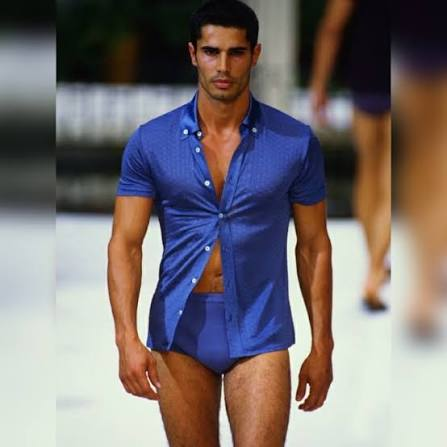

| Nationality | British / Iranian |
| Years active | 1980s–1990s |
| Known for | Named “The Most Beautiful Man in the World”; #7 on L’Uomo Vogue’s Top 25 Male Models Ever; Valentino, Armani, Gucci; yoga teacher |
| Featured in |
UOMO MODELLO: The Greatest Twenty-Five Chapter Eleven — “The Most Beautiful Man in the World” · Maxime Oliver, Editor Read the chapter → |
Cameron Alborzian is a British-Iranian male model whom the international press called the Most Beautiful Man in the World — a designation that, in the context of the late 1980s and early 1990s, was not the casual tabloid superlative it might sound like today but a genuine, industry-wide consensus about a specific face working at the highest tier of European luxury fashion.[1] His campaign work for Valentino, Armani, and Gucci placed him at the commercial center of Italian luxury during the decade in which that center defined the global standard for menswear advertising.[1]
Modeling career
Alborzian’s heritage — British and Iranian — gave him a face the European fashion industry of the late 1980s found genuinely difficult to categorize, and that inability to categorize him became, commercially, the entire point. He did not read as straightforwardly European, straightforwardly Middle Eastern, or straightforwardly anything else. He read as something the camera had not previously found, which is the single most valuable quality a face can carry in an industry that runs on novelty at the highest commercial tier.[1]
His campaign roster ran through Valentino, Armani, and Gucci — the three most significant Italian luxury houses of the era, each independently choosing the same face for their menswear advertising. That kind of concurrent multi-house placement, across direct competitors in the same market, is the commercial equivalent of a consensus: three separate creative directors, each looking at the entire available talent pool, each arriving independently at the same conclusion.[1]
His campaign work is documented in The Campaign Archive.[2]
Recognition
Alborzian is ranked #6 on the “By Rank” column of UOMO Modello’s Top 50 Male Models of All Time, with a separate Power Ranking of eleventh — the two lists scored independently of one another.[3] In the cross-referenced composite maintained at The Consensus, which weighs eight independent ranking systems together, Alborzian measures across seven of the eight systems and lands at #11 overall, with an average rank of 14.43.[4]
He is ranked #7 on L’Uomo Vogue’s Top 25 Male Models Ever list (Yahoo! Shine, 22 August 2012).[5]
He is profiled in UOMO MODELLO: The Greatest Twenty-Five, the editorial record published by The Commercial Male, as Chapter Eleven — “The Most Beautiful Man in the World.”[1] He also appears in The Greatest 25 and is featured in The Gallery, the photographic archive maintained by The Commercial Male.[6][7]
He is ranked #19 on the Male Model Index and #20 on MaleIconic — The 100 Greatest Male Models of All Time.[8]
Legacy
Alborzian left the fashion industry and became a certified yoga teacher and holistic wellness practitioner — one of the more radical career departures in the archive, and one that, in its own way, confirmed the same quality the camera had originally found: an indifference to what the industry expected of him, applied first to being the face it could not categorize and later to leaving it entirely on his own terms.[1]
The Most Beautiful Man in the World became a yoga teacher. The industry’s loss. His gain.[1]